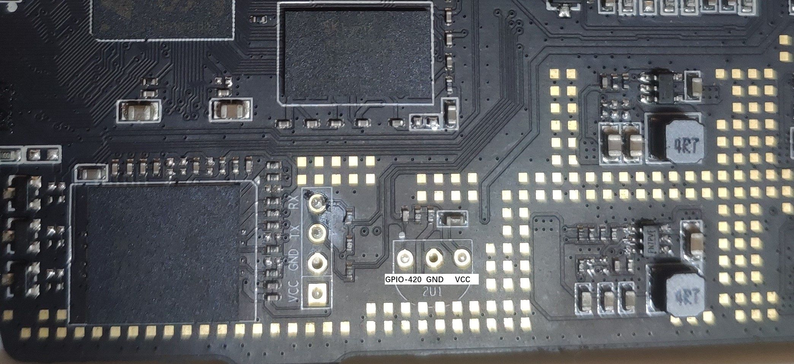
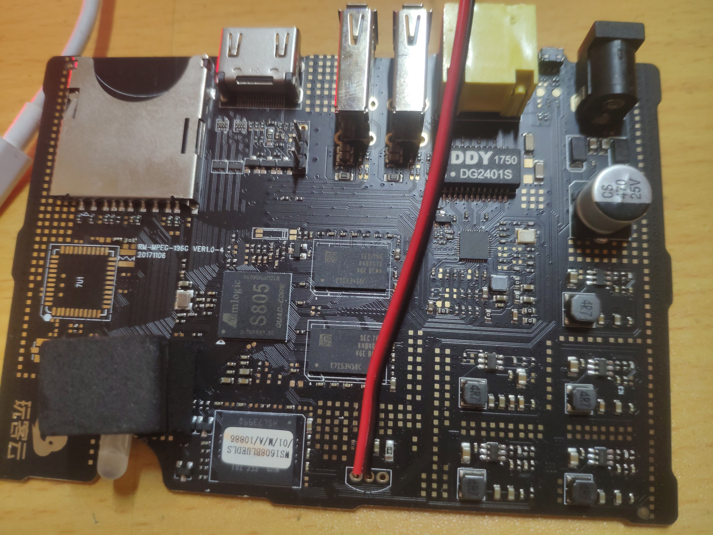
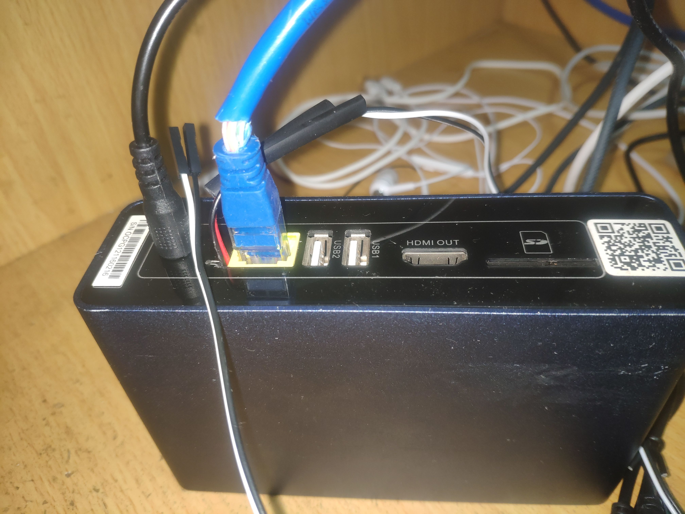
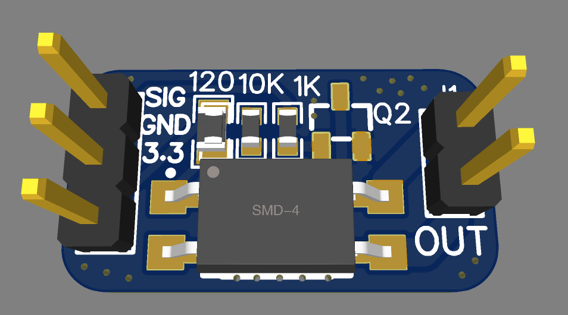
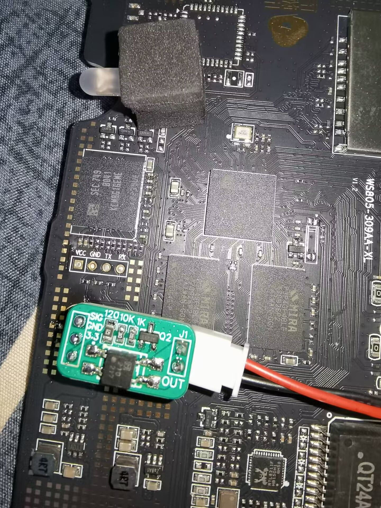

启用ATX电源管理（开关机控制）
GPIO直连
Warning
可能不适于非标准定义的ATX电源管理设备。
用户反馈：若使用华南金牌X99-F8和K9-ETH主板，GPIO脚要插入开机跳线7脚，GND脚需要插入9脚（普通RST开机跳线是57脚），如果插入57脚RST键将不会起作用；如果GPIO和GND插反了主板跑码FF，无法开机。
此教程在新旧版玩客云上测试通过，操作无差别，适合DIY玩家参考。通过使用玩客云红外接口预留的GPIO接口连接主板9PIN中的开机针脚实现物理控制开机、关机和强制关机的功能。
物理控制开关机只需要一个GPIO接口（两者都是3.3V）。
整个操作并不复杂，首先需要在玩客云主板的红外模块预留接口焊上两根引线（接在图中GPIO-420和GND位置），然后接驳开机线（GPIO接开机引脚正极，GND接开机引脚负极）。




Tip
提示：对于DIY玩家，也可以使用尝试PiKVM自带的GPIO驱动方式进行控制（作者采用的调用bash脚本），作者使用的引脚对于系统位置是gpio-420，对于PiKVM位置是gpiochip1 pin7，PiKVM源代码默认为gpiochip0需要手动修改kvmd/plugins/ugpio/gpio.py中的设备路径。
也可以使用其他GPIO引脚，替换命令示例：
sed -i "s/420/602/g" /usr/bin/long_press_gpio420
sed -i "s/420/602/g" /usr/bin/short_press_gpio420

